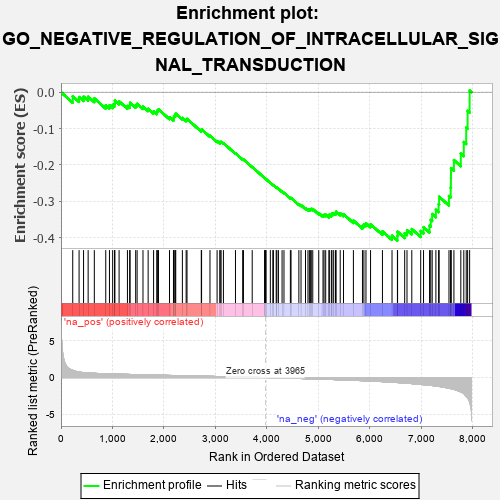
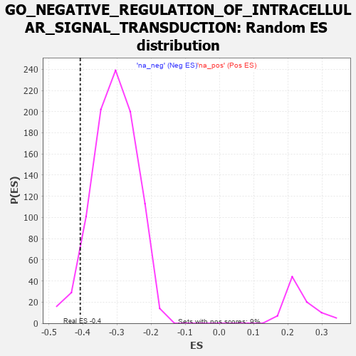

| | | Dataset | 7d |
| Phenotype | NoPhenotypeAvailable |
| Upregulated in class | na_neg |
| GeneSet | GO_NEGATIVE_REGULATION_OF_INTRACELLULAR_SIGNAL_TRANSDUCTION |
| Enrichment Score (ES) | -0.40770835 |
| Normalized Enrichment Score (NES) | -1.3208795 |
| Nominal p-value | 0.05798687 |
| FDR q-value | 0.4492068 |
| FWER p-Value | 1.0 |
Table: GSEA Results Summary

Fig 1: Enrichment plot: GO_NEGATIVE_REGULATION_OF_INTRACELLULAR_SIGNAL_TRANSDUCTION
Profile of the Running ES Score & Positions of GeneSet Members on the Rank Ordered List
| PROBE | GENE SYMBOL | GENE_TITLE | RANK IN GENE LIST | RANK METRIC SCORE | RUNNING ES | CORE ENRICHMENT | | 1 | RHOH | | | 228 | 0.987 | -0.0112 | No |
| 2 | GSK3A | | | 351 | 0.745 | -0.0134 | No |
| 3 | RRN3 | | | 438 | 0.667 | -0.0123 | No |
| 4 | HTRA2 | | | 527 | 0.621 | -0.0123 | No |
| 5 | NOC2L | | | 647 | 0.578 | -0.0171 | No |
| 6 | IGBP1 | | | 869 | 0.514 | -0.0359 | No |
| 7 | PDCD4 | | | 941 | 0.497 | -0.0360 | No |
| 8 | MEN1 | | | 1003 | 0.483 | -0.0351 | No |
| 9 | AKT1 | | | 1040 | 0.476 | -0.0311 | No |
| 10 | TAF9 | | | 1046 | 0.475 | -0.0232 | No |
| 11 | SRC | | | 1128 | 0.459 | -0.0252 | No |
| 12 | PARL | | | 1290 | 0.432 | -0.0379 | No |
| 13 | UBR2 | | | 1334 | 0.423 | -0.0358 | No |
| 14 | KPTN | | | 1341 | 0.422 | -0.0290 | No |
| 15 | OTUD3 | | | 1450 | 0.400 | -0.0355 | No |
| 16 | TIMP2 | | | 1478 | 0.394 | -0.0319 | No |
| 17 | NPRL3 | | | 1592 | 0.375 | -0.0395 | No |
| 18 | HYOU1 | | | 1692 | 0.358 | -0.0456 | No |
| 19 | FNIP1 | | | 1798 | 0.338 | -0.0529 | No |
| 20 | SMAD4 | | | 1860 | 0.326 | -0.0548 | No |
| 21 | NUP62 | | | 1871 | 0.324 | -0.0502 | No |
| 22 | CUL3 | | | 1893 | 0.321 | -0.0471 | No |
| 23 | BMP7 | | | 2107 | 0.290 | -0.0690 | No |
| 24 | NPRL2 | | | 2184 | 0.278 | -0.0737 | No |
| 25 | C1QBP | | | 2189 | 0.278 | -0.0692 | No |
| 26 | ATAD5 | | | 2197 | 0.277 | -0.0651 | No |
| 27 | TRAP1 | | | 2219 | 0.274 | -0.0628 | No |
| 28 | WTIP | | | 2228 | 0.272 | -0.0590 | No |
| 29 | MIF | | | 2357 | 0.252 | -0.0707 | No |
| 30 | MET | | | 2430 | 0.240 | -0.0756 | No |
| 31 | KDM1A | | | 2447 | 0.237 | -0.0733 | No |
| 32 | SLIT2 | | | 2724 | 0.195 | -0.1049 | No |
| 33 | RORA | | | 2730 | 0.193 | -0.1021 | No |
| 34 | MTM1 | | | 2893 | 0.168 | -0.1197 | No |
| 35 | MARK3 | | | 3031 | 0.145 | -0.1345 | No |
| 36 | HDAC1 | | | 3086 | 0.138 | -0.1389 | No |
| 37 | CHP1 | | | 3089 | 0.138 | -0.1366 | No |
| 38 | GPX1 | | | 3109 | 0.135 | -0.1366 | No |
| 39 | SFRP5 | | | 3154 | 0.129 | -0.1399 | No |
| 40 | DDX3X | | | 3388 | 0.091 | -0.1679 | No |
| 41 | HDAC3 | | | 3528 | 0.072 | -0.1842 | No |
| 42 | PIN1 | | | 3543 | 0.069 | -0.1848 | No |
| 43 | NF1 | | | 3713 | 0.040 | -0.2056 | No |
| 44 | PPM1A | | | 3953 | 0.002 | -0.2359 | No |
| 45 | NCOR1 | | | 3961 | 0.000 | -0.2368 | No |
| 46 | IGF1R | | | 3970 | -0.002 | -0.2378 | No |
| 47 | SCAI | | | 3983 | -0.005 | -0.2392 | No |
| 48 | SFRP2 | | | 4065 | -0.018 | -0.2492 | No |
| 49 | MTOR | | | 4114 | -0.025 | -0.2549 | No |
| 50 | ABL1 | | | 4125 | -0.027 | -0.2557 | No |
| 51 | PDX1 | | | 4179 | -0.038 | -0.2617 | No |
| 52 | SESN1 | | | 4192 | -0.041 | -0.2625 | No |
| 53 | FHL2 | | | 4222 | -0.046 | -0.2654 | No |
| 54 | RGS3 | | | 4293 | -0.059 | -0.2732 | No |
| 55 | OPA1 | | | 4330 | -0.065 | -0.2766 | No |
| 56 | SYVN1 | | | 4454 | -0.085 | -0.2907 | No |
| 57 | LRRK2 | | | 4467 | -0.087 | -0.2907 | No |
| 58 | DLG5 | | | 4619 | -0.121 | -0.3077 | No |
| 59 | ITPR1 | | | 4661 | -0.130 | -0.3106 | No |
| 60 | FBLN1 | | | 4748 | -0.149 | -0.3188 | No |
| 61 | ITFG2 | | | 4796 | -0.156 | -0.3220 | No |
| 62 | TAOK3 | | | 4823 | -0.162 | -0.3224 | No |
| 63 | EIF3A | | | 4842 | -0.167 | -0.3217 | No |
| 64 | DLG1 | | | 4860 | -0.169 | -0.3208 | No |
| 65 | CLU | | | 4889 | -0.174 | -0.3212 | No |
| 66 | KLF4 | | | 5005 | -0.198 | -0.3323 | No |
| 67 | DRD2 | | | 5088 | -0.221 | -0.3387 | No |
| 68 | MMP9 | | | 5108 | -0.227 | -0.3370 | No |
| 69 | FLCN | | | 5140 | -0.235 | -0.3367 | No |
| 70 | ASH1L | | | 5203 | -0.248 | -0.3402 | No |
| 71 | ATM | | | 5210 | -0.249 | -0.3365 | No |
| 72 | MGRN1 | | | 5250 | -0.257 | -0.3368 | No |
| 73 | PTEN | | | 5262 | -0.261 | -0.3335 | No |
| 74 | MAGI2 | | | 5295 | -0.269 | -0.3327 | No |
| 75 | NPY2R | | | 5331 | -0.281 | -0.3321 | No |
| 76 | LMO3 | | | 5342 | -0.283 | -0.3283 | No |
| 77 | PPM1B | | | 5422 | -0.300 | -0.3329 | No |
| 78 | ACTN3 | | | 5486 | -0.315 | -0.3353 | No |
| 79 | CASP8 | | | 5678 | -0.369 | -0.3529 | No |
| 80 | TKFC | | | 5854 | -0.419 | -0.3676 | No |
| 81 | SZT2 | | | 5882 | -0.429 | -0.3634 | No |
| 82 | STK11 | | | 5922 | -0.443 | -0.3604 | No |
| 83 | XBP1 | | | 6011 | -0.475 | -0.3630 | No |
| 84 | VDAC2 | | | 6242 | -0.553 | -0.3823 | No |
| 85 | CSK | | | 6428 | -0.630 | -0.3945 | No |
| 86 | DYRK2 | | | 6533 | -0.677 | -0.3955 | Yes |
| 87 | KANK1 | | | 6536 | -0.678 | -0.3836 | Yes |
| 88 | RFFL | | | 6674 | -0.749 | -0.3875 | Yes |
| 89 | GSK3B | | | 6719 | -0.768 | -0.3793 | Yes |
| 90 | PAQR3 | | | 6812 | -0.819 | -0.3762 | Yes |
| 91 | PDE2A | | | 6985 | -0.927 | -0.3815 | Yes |
| 92 | RNF34 | | | 7040 | -0.963 | -0.3710 | Yes |
| 93 | UFD1 | | | 7157 | -1.040 | -0.3670 | Yes |
| 94 | PTPRJ | | | 7180 | -1.054 | -0.3509 | Yes |
| 95 | MFN2 | | | 7208 | -1.081 | -0.3348 | Yes |
| 96 | CIB1 | | | 7280 | -1.152 | -0.3231 | Yes |
| 97 | CYLD | | | 7333 | -1.206 | -0.3081 | Yes |
| 98 | GPD1L | | | 7343 | -1.215 | -0.2874 | Yes |
| 99 | CD22 | | | 7534 | -1.449 | -0.2855 | Yes |
| 100 | CALM1 | | | 7567 | -1.499 | -0.2625 | Yes |
| 101 | LITAF | | | 7572 | -1.511 | -0.2359 | Yes |
| 102 | NLRC3 | | | 7574 | -1.515 | -0.2087 | Yes |
| 103 | PDCD6 | | | 7630 | -1.615 | -0.1867 | Yes |
| 104 | PDE4D | | | 7764 | -1.944 | -0.1686 | Yes |
| 105 | PKD2 | | | 7822 | -2.167 | -0.1369 | Yes |
| 106 | CALM3 | | | 7869 | -2.525 | -0.0973 | Yes |
| 107 | CAV3 | | | 7896 | -2.739 | -0.0513 | Yes |
| 108 | ARRB1 | | | 7935 | -3.377 | 0.0046 | Yes |
Table: GSEA details [plain text format]

Fig 2: GO_NEGATIVE_REGULATION_OF_INTRACELLULAR_SIGNAL_TRANSDUCTION: Random ES distribution
Gene set null distribution of ES for GO_NEGATIVE_REGULATION_OF_INTRACELLULAR_SIGNAL_TRANSDUCTION